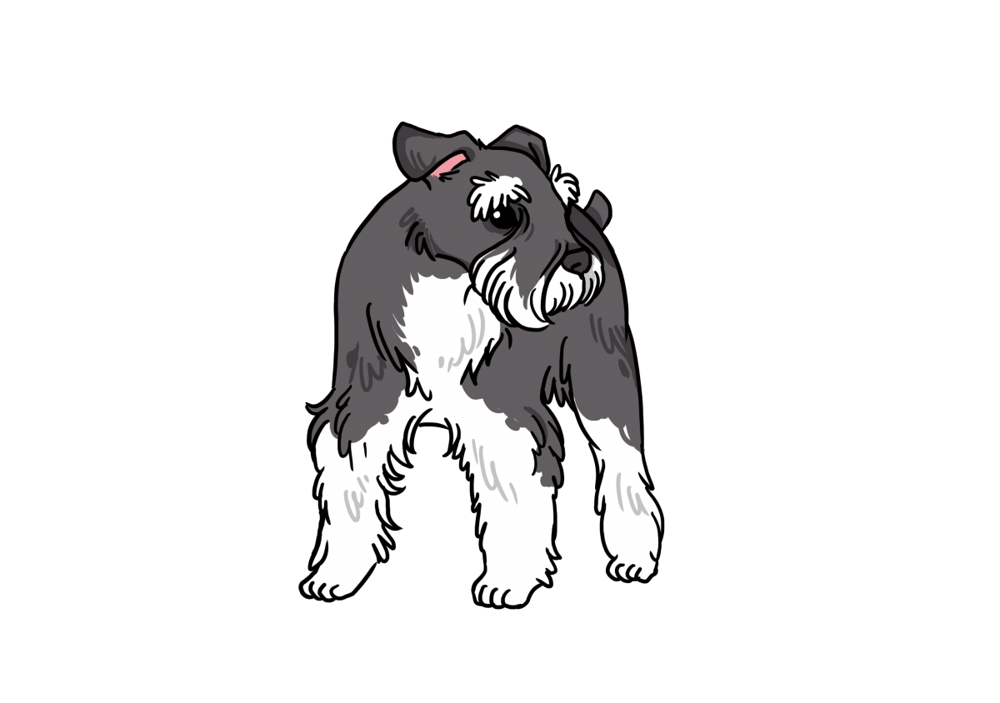
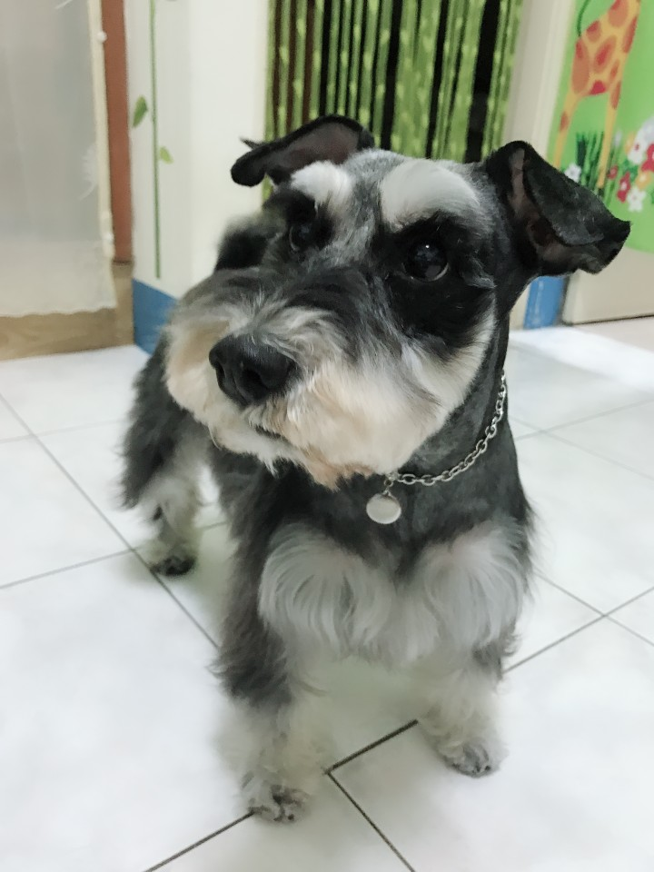
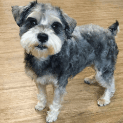
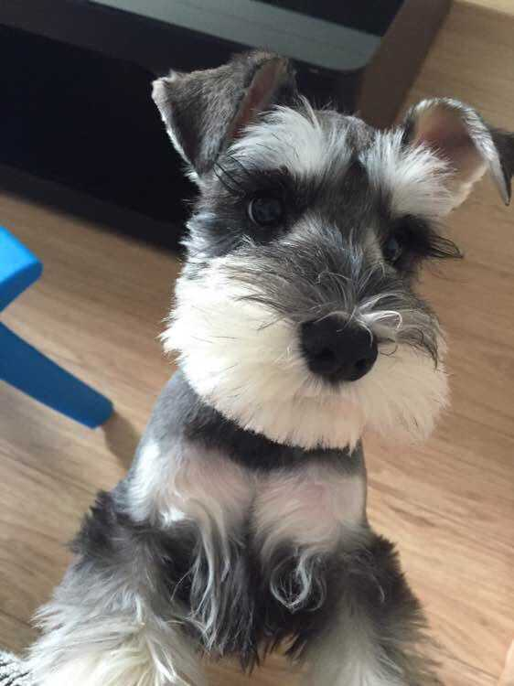

雪納瑞

外表
雪納瑞的外表是非常的有特色，他們是結實、健壯，並且「方方正正」的（身體的長度和腳至肩膀的高度是相同的）、很可愛、脾氣也很好。迷你雪納瑞具有長鬍鬚、眉毛，腿上也羽狀的毛，耳根位置高，向前折下，尾根高，保持水平以上；他們具有長又厚實的毛，使得他們具有養在家中的寵物狗的外表。美國犬業俱樂部所認定的迷你雪納瑞只有三種顏色，黑色、胡椒色（salt and pepper）和銀黑色。
性格
雪納瑞最讓人熟悉的是他們友善的個性和調皮又充滿活力，他們對主人是非常的忠心並保護。因為迷你雪納瑞能與兒童和大部份寵物相處融洽，所以他們非常合適與兒童一起成長。但因為迷你雪納瑞曾經被人用來捕老鼠，所以不能讓他們跟小型寵物相處，他們可能會攻擊甚至殺死他們。迷你雪納瑞是優秀的看門犬，他們以出聲來警示人來到家裡；然而，卻因為他們友善的個性，使他們不適合擔任警戒犬。
歷史
關於雪納瑞最早的紀錄是在19世紀末期的德國，在早期的培養階段，是希望藉由小型品種的混血，將標準雪納瑞的體型減小，產生迷你型的雪納瑞。在與其他品種例如迷你杜賓犬或是艾芬篤賓犬混血之後，產生了一個意外的副作用，使得新種雪納瑞的毛色與最初的目的不符，因此包括白色等這些毛色「錯誤」的幼犬就被從育種計畫中排除。
飼養注意事項
原為獵兔犬，好動破壞力強，在管教方面需多下功夫
容易因食慾旺盛造成肥胖，需注意體重控制
需注意罹患腫瘤，如：血管肉瘤、淋巴瘤


